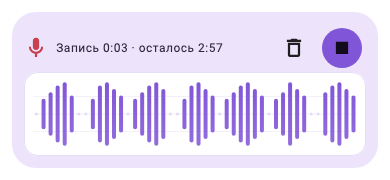
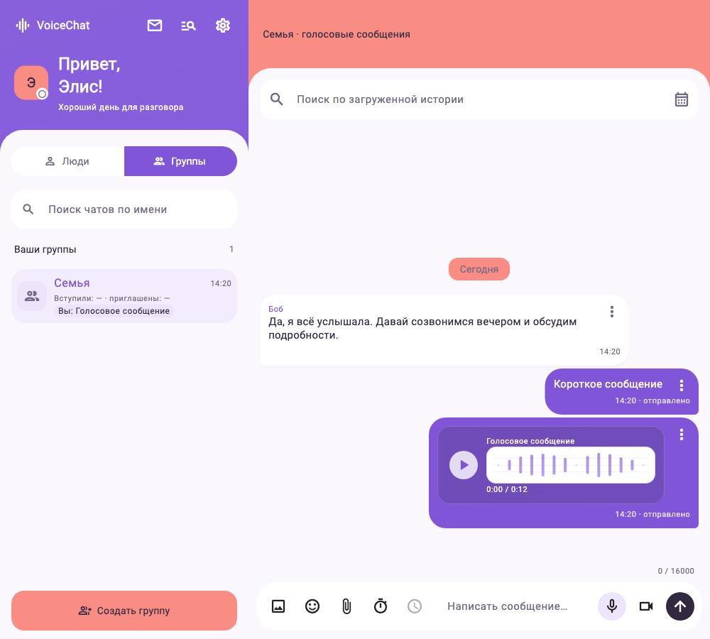
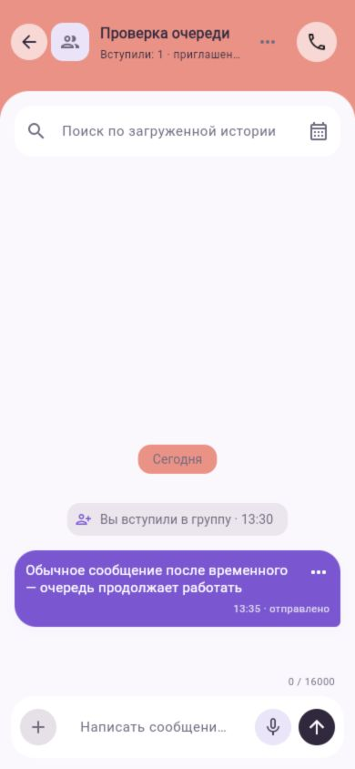

← Обзор 35 экранов предыдущей итерации · Основной сайт · Очередь расписания
Голосовые, ровные отступы и быстрые переходы
23 октября 2026. Новая шкала записи строится по последовательным окнам микрофонного PCM по 50 мс. Увеличены высота, толщина и контраст столбцов; тихая речь и паузы различимы. Плеер отделён оттенком от внешней карточки. Собственное голосовое в списке людей/групп выделяется лавандовым, входящее — коралловым.
При записи
Настоящий компонент записи · уровни из тестового PCM
Сообщения и время
У содержимого и времени единые отступы 12 px. Время выровнено справа. Короткие сообщения остаются компактными; меню сохраняет область нажатия 48 × 48 px внутри карточки.
Общий интерфейс · лавандовое превью собственного голосового слева
Эти снимки — отрисовка используемых приложением Flutter-компонентов с тестовыми сообщениями и синтетическим PCM. Общий код работает в Android и вебе. Здесь не показана проверка настоящего микрофона, доставки аудио или реального телефона.
Основной сайт · было / стало
Один тестовый профиль и одна комната во встроенном браузере. В новой версии цветные области доходят до краёв окна, без внешней рамки, верхней пустой полоски и разделителя между шапками.
Опубликованный сайт на мобильной ширине · 390 × 844

Быстрая лёгкая анимация
Переходы около 180 мс: вкладки людей/групп, смена чата и темы, окна и меню, новые сообщения, очередь расписания, ответы, вложения, запись и дополнительные действия. Панели мягко раскрываются и затухают; исчезающие кнопки не принимают нажатия. Уменьшение движения в системе отключает новые эффекты. Системные окна камеры, микрофона и выбора файлов используют анимацию самой платформы.
Промежуточные кадры, быстрое завершение переходов и режим уменьшения движения проверены автоматическими тестами. Для просмотра в действии откройте основной сайт.
Проверка завершена: 131 Flutter-тест, анализ без замечаний, web release опубликован, Android debug собран для ARM64 и x86_64. Настоящий микрофон и реальный телефон не проверены.